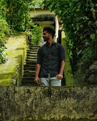

M.Dhakshna moorthy

Summary
To work in a challenging and dynamic environment in
the IT field, involving new technologies where I can use
my Analytical skills, leadership skills and can contribute
to achieve the Organization goals and prove to been
as set as the organization .Well-developed critical
thinking skills, and ability to work and perform well
independently.
Education
Bachelor’s of Civil Engineering
8.2 CGPA
Completed in 2023
Higher Secondary
79.5%
Completed in 2019
Senior Secondary
95.4%
Completed in 2017
Work Experience
Fresher for IT Environment
Internship:
Implant Training:
Projects & Achievements
- Designing and Planning of
Auditorium building.
- Successfully completed and
handovered 80/lakhs worth
residential building project.
- Organized Asian equipped
powerlifting championship in KCT
-2022.
Skills
- Observation
- Decision Making
- Communication
- Multi tasking
- Teamwork
- Captainship
Others